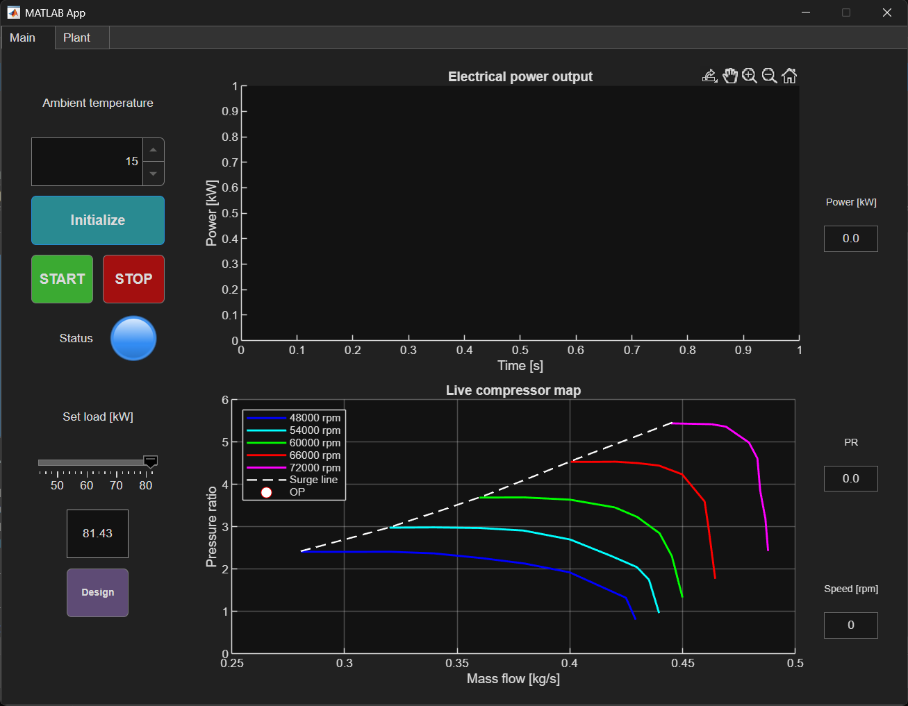
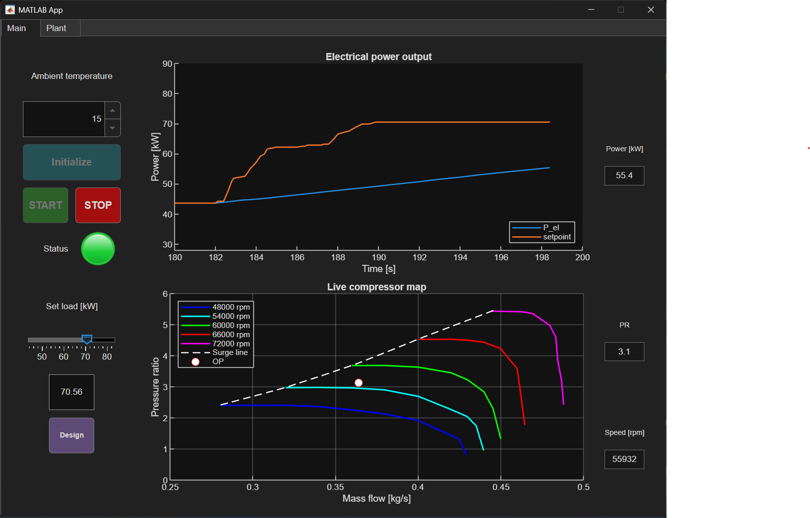
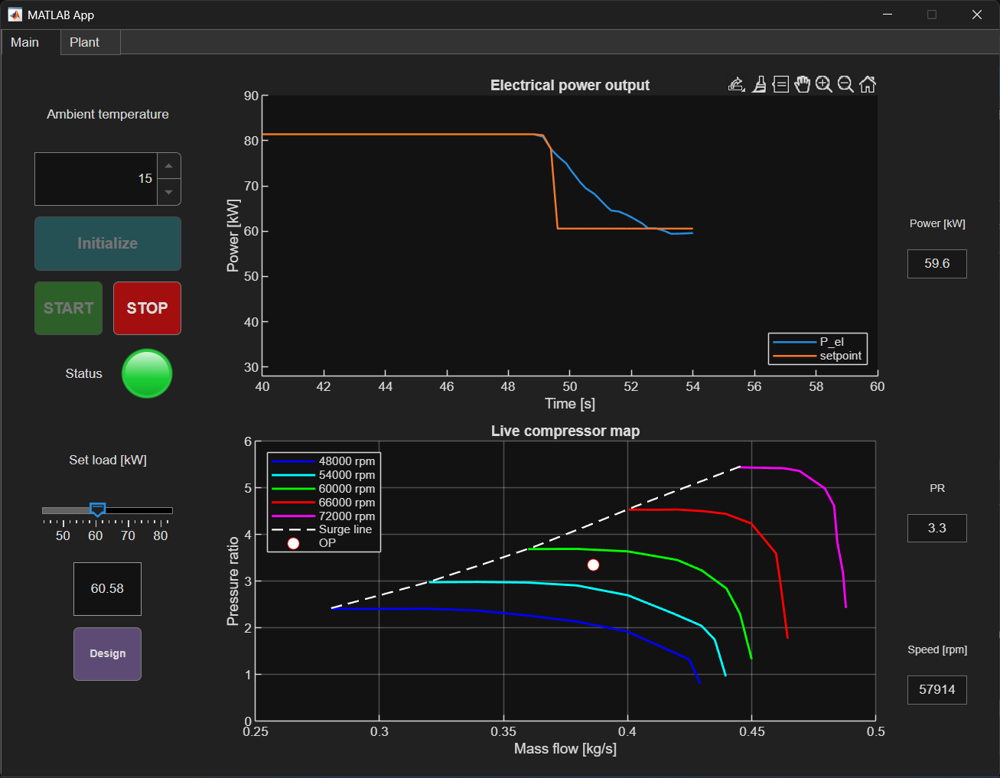
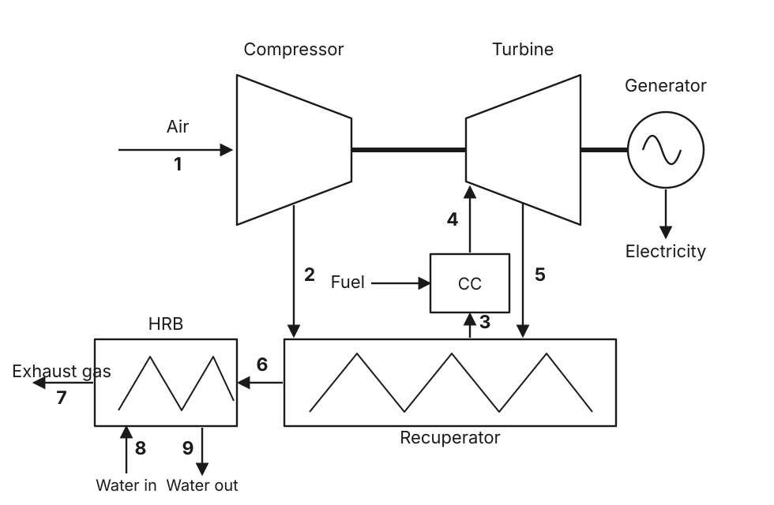

Control panel of a cogeneration microturbine
An interactive MATLAB application that simulates, in real time, the control panel of a gas microturbine of about 80 kW, integrated into a cogeneration (CHP) system that produces domestic hot water. The plant works in electrical priority, with a control system that tracks the target set by the user, while the hot-water flow rate is dynamically controlled to keep a constant output temperature (60 °C). Behind the interface runs a dynamic thermodynamic model built in Simulink.
Note. This model does not reproduce a specific real machine: it started as a simulation "game" for learning and practice. Its structure is, however, complete and physically consistent, so with accurate data from a manufacturer (maps, geometries, efficiency curves) it could be calibrated into a sort of digital twin of an existing microturbine.
Part 1
The app: what it does and how to control it
The app is organised into two tabs. One holds the controls and the real-time plots; the other shows a live update of the most meaningful temperatures of the plant. Once the model is running, the user can freely set the target electrical production and monitor the plant response, just as they would in front of the control panel of a real plant.

The main controls
Before starting the simulation, the model must be initialised with the only non-fixed boundary condition: the ambient temperature, in other words the air-intake temperature. This directly affects the plant's performance and efficiency, so the program automatically adapts the optimal-speed schedule, the maximum and minimum power thresholds and the design conditions accordingly. Once the simulation is initialised and started, the user can move the slider to set the power set-point, and may use the Design button to send the target back to design conditions. Note that the power set-point is not the actual electrical load drawn from the shaft: sudden load discontinuities could damage the machine, so the generator is designed to damp them into a smooth transition the system can handle. In the bottom plot the user can also see where the current operating point of the compressor sits within the compressor map.
The two images below are shown as an example. Notice how the machine reacts more quickly to a load cut than to a load increase: a transient from maximum to minimum power can be completed safely in 10–15 seconds, whereas a full ramp-up in the opposite direction takes about 2.5 minutes. The reason lies in the turbine-inlet temperature (TIT): to keep a good efficiency the machine always runs with a TIT close to its maximum allowable value. When more power is requested, the fuel flow cannot simply be pushed all the way up; it must be raised very gradually, so that the recuperator warms up progressively and the TIT limit is never exceeded.


The plant diagram
The second tab visualises the whole plant: compressor, combustion chamber, turbine, recuperator, generator and heat-recovery boiler (HRB). It shows the temperatures at the most important nodes and the two efficiencies (electrical and CHP), updated in real time.
Part 2
The model: blocks and equations
The heart of the app is a dynamic model of the single-shaft recuperated Brayton cycle in a cogeneration layout. The diagram below numbers the main streams of the plant, from the air intake (1) to the hot-water supply (9). The sections that follow describe the main blocks of the model with their governing equations.

Symbols: \(\gamma\) heat-capacity ratio of air, \(c_p\) specific heat, \(\eta\) efficiencies, \(\dot m\) mass flow rates, \(PR\) pressure ratio, \(\beta\) turbine expansion ratio. Temperatures use the cycle symbols \(T_2\) (compressor outlet), \(T_2''\) (recuperator cold-side outlet), \(T_3\) (turbine inlet, TIT), \(T_4\) (turbine outlet) and \(T_5\) (recuperator hot-side outlet).
Compressor
Map in SimulinkCompression is modelled starting from an ideal adiabatic compression and applying the isentropic-efficiency correction:
\[ T_2 = T_1\left(1 + \frac{PR^{\frac{\gamma-1}{\gamma}} - 1}{\eta_c}\right), \qquad \dot W_c = \dot m_a\, c_{p,\text{air}}\,(T_2 - T_1) \]The air mass flow rate is read from the compressor map, as a function of pressure ratio and rotational speed:
\[ \dot m_a = f(PR,\, n) \]It is worth noting that, for lack of detailed data, the model uses a constant isentropic efficiency (\(\eta_c = 0.81\)). This makes the absolute efficiency figures of the machine unreliable, but it does not compromise the dynamics of the system.
Accumulation volume
This block captures the effect of mass accumulation throughout the machine, which gives the discharge pressure its own dynamics (so \(PR\) is a state of the system, not an imposed value). The pressure evolves from the imbalance between the air drawn by the compressor \(\dot m_a\) and the flow leaving towards the turbine \(\dot m_x\):
\[ \frac{dP_2}{dt} = \frac{1}{C_f}\left(\dot m_a - \dot m_x\right), \qquad C_f = \frac{V}{\gamma\, R\, T_2} \]\(C_f\) is the fluid-dynamic capacitance, \(V\) an estimate of the fluid volume inside the whole machine (about 25 litres) and \(R\) the gas constant.
Recuperator
5 nodes + metal massThe recuperator preheats the compressed air with the exhaust gas. It is the most elaborate block: it is modelled as a 5-node counterflow heat exchanger, each node with its own metal mass that stores energy and introduces thermal inertia. For every node the exchange effectiveness and the conductance depend on the flow according to the Dittus–Boelter correlation:
\[ \varepsilon = \exp\!\left(-\frac{UA/N}{\dot m\, c_p}\right), \qquad UA = UA_0\left(\frac{\dot m}{\dot m_0}\right)^{0.8} \]The metal temperature of each node evolves with the balance between heat released by the gas and absorbed by the air:
\[ C_m\,\frac{dT_{m,i}}{dt} = \dot Q_{h,i} - \dot Q_{c,i} \]Combustion chamber
The fuel flow \(\dot m_f\) comes from the control system and is used to compute the exhaust-gas flow \(\dot m_{eg} = \dot m_x + \dot m_f\). The turbine-inlet temperature \(T_3\) then follows from an algebraic energy balance on the chamber:
\[ T_3 = \frac{\eta_{CC}\,\dot m_f\,LHV + \dot m_x\, c_{p,\text{air}}\, T_2''} {\dot m_{eg}\, c_{p,eg}} \]Written this way, the balance assumes steady, complete combustion and neglects heat losses and the thermal inertia of the chamber. It also uses indicative average values of the specific heats; a more accurate model would rely on an enthalpy-based formulation.
Pressure drops
A single block lumps the pressure losses in the recuperator, the combustion chamber and the ducts up to the turbine inlet. A quadratic dependence between pressure drop and mass flow is assumed, through a coefficient \(\lambda\) that can be tuned to reproduce a given percentage of design losses from the manufacturer's data. The air mass flow \(\dot m_x\) is then obtained from the pressures across the block:
\[ \dot m_x = \sqrt{\dfrac{1 - P_3/P_2}{\lambda}} \]Turbine
Choking in SimulinkThe turbine operates under sonic choking: the swallowed flow is linked to the inlet conditions by a machine constant \(K_{choke}\), fixed at the design point and treated as a hardware datum (the turbine "throat"):
\[ K_{choke} = \left.\frac{\dot m_{eg}\sqrt{T_3}}{P_3}\right|_{\text{design}} \]The real expansion, with efficiency \(\eta_t\) and ratio \(\beta = P_3/P_4\), gives the exhaust temperature and the power:
\[ T_4 = T_3 - \eta_t\,T_3\Bigl(1 - \beta^{-\frac{\gamma-1}{\gamma}}\Bigr), \qquad \dot W_t = \dot m_{eg}\, c_{p,eg}\,(T_3 - T_4) \]Exhaust pressure drop
A dedicated block accounts for the pressure losses downstream of the turbine, again with a quadratic law in the flow:
\[ P_4 = P_{amb} + \lambda_{eg}\, \dot m_{eg}^{\,2} \]Shaft dynamics
Compressor, turbine and generator sit on the same shaft. The imbalance between the power produced by the turbine, the power absorbed by the compressor and the electrical load accelerates or decelerates the rotor, with inertia \(J\). The rotor kinetic energy \(E\) evolves as:
\[ \frac{dE}{dt} = \eta_{mech}\left(\dot W_t - \dot W_c\right) - \frac{P_{el}}{\eta_{gen}}, \qquad n = \frac{60}{2\pi}\sqrt{\frac{2E}{J}} \]The electrical power is delivered through the generator (efficiency \(\eta_{gen}\)); this state equation is why, on a load step, the machine responds with a transient rather than instantaneously.
Fuel control system
Logic coreThe governor is designed to minimise the error between the current shaft speed and the reference speed \(n_{ref}\) set by the optimal-speed schedule (see below) at a given load. The output of the PI controller is saturated between a minimum and a maximum allowed fuel flow, computed dynamically from the recuperator cold-side outlet temperature \(T_2''\) and a combustion-chamber energy balance, so that the turbine-inlet temperature stays between its maximum (material limit) and its minimum (combustion-chamber stability):
\[ \dot m_{f,\max} = \max\!\left(0,\ \dot m_x\,\frac{c_{p,eg}\,T_{3,\max} - c_{p,\text{air}}\,T_2''}{LHV\,\eta_{comb} - c_{p,eg}\,T_{3,\max}}\right) \] \[ \dot m_{f,\min} = \max\!\left(0,\ \dot m_x\,\frac{c_{p,eg}\,T_{3,\min} - c_{p,\text{air}}\,T_2''}{LHV\,\eta_{comb} - c_{p,eg}\,T_{3,\min}}\right) \]Heat-recovery boiler (HRB)
Because the plant runs in electrical priority, the exhaust-gas temperature and flow reaching the boiler are an uncontrolled input. The heat exchanger itself is a very simple model with constant effectiveness. Between its outlet and the supply line a small buffer tank absorbs the flow fluctuations: the water flow rate is regulated by a PI controller whose goal is to keep a constant supply temperature of 60 °C.
Optimal-speed schedule and minimum load
Being a variable-speed machine, at every power level the microturbine can pick the shaft speed that maximises the electrical efficiency. This optimal-speed schedule \(n_{ref}(P_{el})\) is computed once at initialisation, by sweeping the feasible operating map and keeping, for each load, the most efficient speed that still respects the surge margin, the turbine choking, the speed limits and the maximum turbine-inlet temperature. At runtime it is used as a simple 1-D lookup, fast to evaluate at every step.
The minimum deliverable load (turndown) is found by running many
closed-loop simulations in parallel: for several ambient temperatures the load is
progressively lowered until the model can no longer stay stable. The resulting map is
stored in turndownMap.mat and reused as-is, since recomputing it is fairly
long and requires the Parallel Computing add-on. If the input data are changed, deleting
turndownMap.mat triggers a fresh calculation on the next run.
Reference. Compressor map from: D. F. Blanco-Patiño, J. Niño-Navia, J. I. Garcia-Sepulveda, C. Nieto-Londoño, "Performance prediction of a centrifugal compressor for a cogeneration microturbine", International Journal of Thermofluids 17 (2023) 100272 (open access, CC BY-NC-ND). doi.org/10.1016/j.ijft.2022.100272
Data sheet
Design specifications
Nominal parameters of the simulated machine.
| Parameter | Value | Unit |
|---|---|---|
| Electrical performance | ||
| Rated electrical power | 81 | kW |
| Electrical efficiency | 31 | % |
| Maximum and minimum power | View chart ↗ | |
| Cogeneration (CHP) | ||
| Recovered thermal power | 115 | kW |
| Overall CHP efficiency | 76 | % |
| Hot-water supply temperature | 60 | °C |
| Thermodynamic cycle | ||
| Pressure ratio (PR) | 4 | – |
| Turbine-inlet temperature (T₃) | 940 | °C |
| Exhaust-gas temperature (before HRB) | 325 | °C |
| Exhaust mass flow | 0.453 | kg/s |
| Rotating group | ||
| Design shaft speed | 65,500 | rpm |
| Speed range | 49,000–69,000 | rpm |
| Compressor efficiency | 0.81 | – |
| Turbine efficiency | 0.88 | – |
| Fuel | ||
| Fuel type | Natural gas | |
| Lower heating value (LHV) | 47 | MJ/kg |
* Operating conditions vary with the ambient temperature; the values reported here correspond to 15 °C.